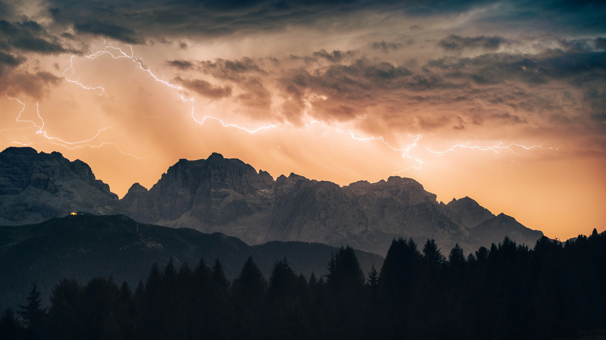
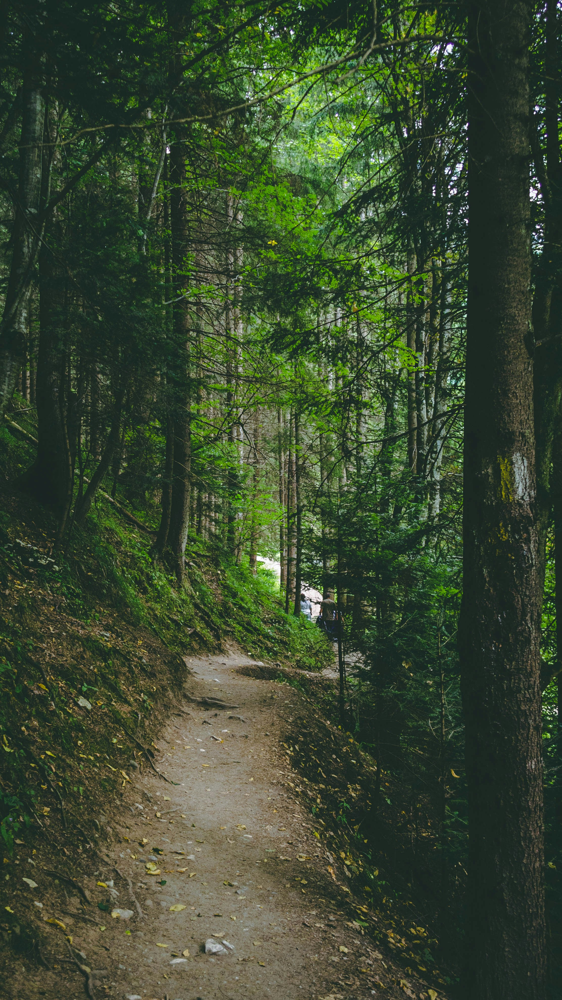
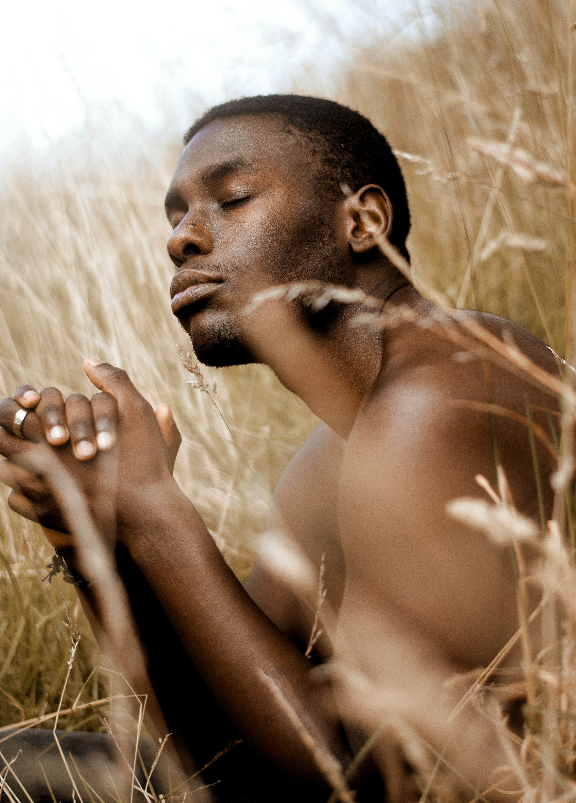
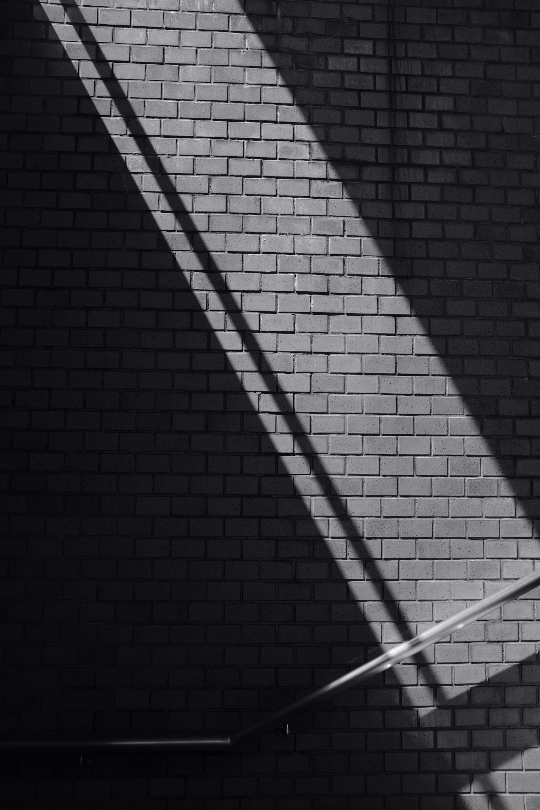

Horizontes de luz
Exposición fotográfica
Madrid, España

FOTOGRAFÍA DE AUTOR · PORTFOLIO
Historias que habitan entre la luz y la sombra.
Descubrir mi historia01 / SOBRE MÍ
Soy Anthonello Michel y entiendo la fotografía como una forma de detener el tiempo y contar historias.
Me inspiran los paisajes, la luz natural y esos instantes que muchas veces pasan desapercibidos.
Cada fotografía es una oportunidad para descubrir algo extraordinario en lo cotidiano.
Mi trayectoria02 / TRAYECTORIA
Un recorrido visual por tres formas de descubrir historias a través de la fotografía.

La inmensidad del mundo natural.

Emociones que trascienden las palabras.

La armonía oculta en las formas.
03 / AGENDA
Exposiciones, encuentros y experiencias fotográficas. Descubre dónde podremos compartir nuestra pasión por el arte.
Exposición fotográfica
Madrid, España
Taller de fotografía
Barcelona, España
Encuentro artístico
Valencia, España